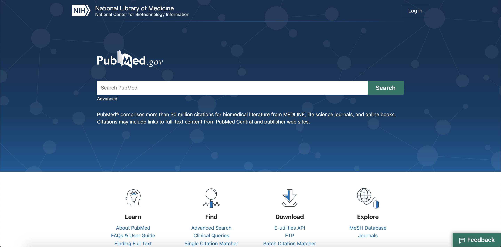

Ricerca bibliografica nella banca dati PubMed¶
La consultazione della Letteratura Scientifica inerente la tematica che si sta affrontando è una delle fasi essenziali di ogni progetto di ricerca.
La banca dati PubMed, sviluppata presso il National Center for Biotechnology Information (NCBI) raccoglie circa 33 milioni di lavori (articoli, review, e libri) scientifici pubblicati.
Oltre all’NCBI, il suo mantenimento, è supportato dalla U.S. Library of Medicine. Attualmente, ricerca e raccoglie articoli da oltre 7.600 riviste internazionali a carattere biomedico.
Per interrogare questa banca dati, utilizzando il proprio browser (e.g. Safari, Explorer, Chrome, Opera, Firefox…) ci si deve collegare al sito: https://www.ncbi.nlm.nih.gov/pubmed/.

La ricerca è effettuata inserendo nella casella Search il termine o i termini d’ interesse, eventualmente connettendoli con gli operatori logici AND, OR e NOT.
Cliccando su Search si ottiene il risultato della ricerca costituito da una serie di citazioni ad articoli che comprendono il titolo del lavoro, il primo autore, la rivista, l’anno di pubblicazione ed il numero identificativo della citazione (PubMed IDentifier, PMID).
Cliccando sul titolo del lavoro (in blu) si ottiene una descrizione più dettagliata della citazione, che generalmente include l’abstract, la cui lettura è molto utile per avere un’idea più precisa del contenuto dell’articolo.
L’interfaccia grafica ci permette di “ordinare” le risposte del sistema di retrieval sulla base della pertinenza alla ricerca (Best Match) oppure sulla base della più recente data di pubblicazione (Most Recent).
Cliccando su Display options è possibile modificare la modalità con cui sono mostrati i risultati.
Dopo aver effettuato la ricerca è possibile selezionare un sottoinsieme di articoli. Inoltre gli articoli selezionati possono essere ordinati secondo svariati criteri (es. data della pubblicazione), a cui è possibile avere accesso utilizzando la funzione Sort By dal menù a tendina Display Settings.
Per combinare precedenti ricerche ed eventualmente restringere l’insieme dei risultati combinando più criteri è possibile adottare la seguente opzione:
Advanced mostra un elenco storico di tutte le ricerche effettuate che possono essere combinate con operatori logici per effettuare nuove ricerche.
Proviamo ora a svolgere alcuni semplici esercizi.
i) Quanti articoli nella banca dati PubMed contengono la parola Bioinformatics?
ii) Quanti articoli trattano del gene p53? Quanti riguardano anche i mitocondri?
iii) Quanti articoli ha pubblicato il prof. G. Pesole nel `2005?